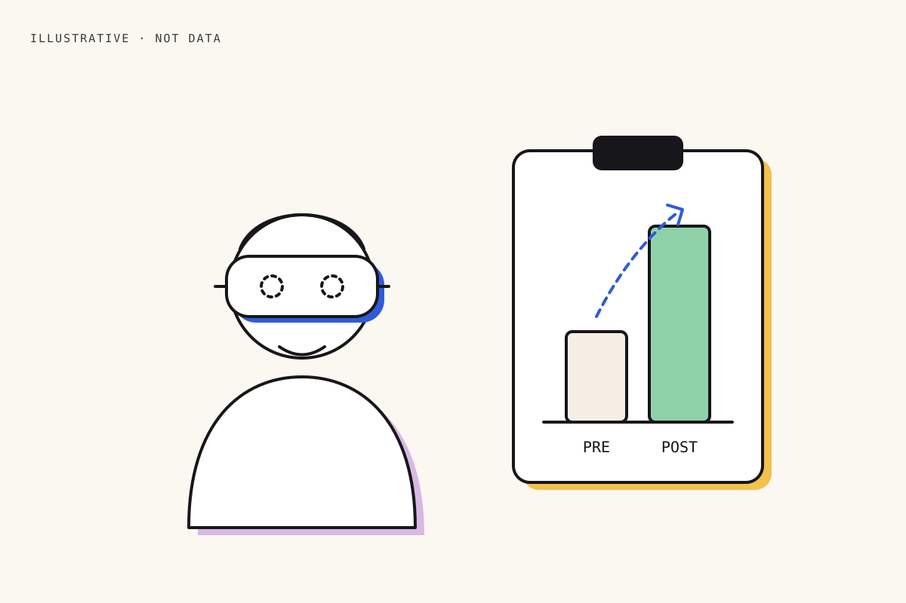

SURADD: did the teacher training actually work?
I helped design a VR app for middle-school science and evaluated the training that prepared 88 teachers to use it, and reported what the evidence does and doesn’t show.

New technology in classrooms only helps if teachers use it.
SURADD (Southern University Reaching Across the Digital Divide) brought broadband-ready infrastructure, VR-infused middle-school science lessons and a mobile and stationary CAVE to under-served communities. Teachers were the link between the equipment and the students.
So the program needed an honest answer to one question: did the professional development change what teachers know, believe and plan to do?
What I did.
I was part of the VR development team that designed the SURADD VR app used in the lessons.
I also ran the evaluation of the teacher professional development using the Kirkpatrick four-level model: reaction, learning, behaviour and results. That meant pre/post surveys, coding the open-ended responses into themes, and an executive summary with recommendations for scaling.
How the findings are reported.
- 1Use one framework across different cohorts
The two cohorts differed (in-service educators and pre-service teachers), so each was reported against the same Kirkpatrick levels instead of being pooled into one number.
- 2Report the sample at every step
The Fall cohort went from 28 teachers at the start to 23 at the end, and the results say so.
- 3Projections are not results
The program report also projects how many students could be reached. That is a plan, not a finding, so it is not counted here.
What changed, pre to post.
Cohorts: Spring–Summer, 65 educators from 47 schools; Fall, 28 pre-service teachers (23 completed the post-survey). 88 teachers in total.
All of these are self-reported, pre/post, with no control group. They show that teachers felt more capable and ready; they do not yet show changes in classroom practice or in student learning.
Honest limits.
- No comparison group, so some of the gain could come from other causes, such as simply being surveyed twice.
- Next: classroom observation of VR lessons (Kirkpatrick level 3), and student outcomes where teachers adopt it (level 4).
- A delayed follow-up survey would show whether the gains last beyond the workshop.
I can run an evaluation of a real program, report pre/post changes with their limits, and keep projections out of the results — the same discipline an AI product needs before launch.